Hello,
I'm Dylan Kayyem
A product designer turned developer based in Denver, CO.
Aspiring to push the world forward by creating a bridge between people and technology.
An avid learner and self-taught front-end software developer.
PawPrints
A Social Media App for Dog-Owners (iOS)
UX/ui Case Study
sponsored by brainstation
Introduction
Tools
Duration
January 2021 - April 2021
Skills
Research Development
User Testing
Market Research Analysis
Lo-fi to Hi-fi Wireframe(s)
UI Library
Design Systems
The Goal
The Approach
"How might we help the active dog owner who walk their dogs in suburban areas and seek new social interactions for their dog, find a better alternative to do so?"
-
After conducting thorough research on the target audience, the design goals seemed more obvious. The #1 value a users will have is the unique way to find appropriate social stimulation for your dog, and connect with other like minded dog-owners. I believe my users have a need to find an alternative method to allowing their dog’s to play with others in open spaces without the unpredictable variables.
-
I synthesized the results and combined the most common pain points, motivations, and behaviors to form a primary persona to better illustrate a typical dog-owner experience. Using my interview results, I built out an experience map to gather better visualization for my persona Ashley.
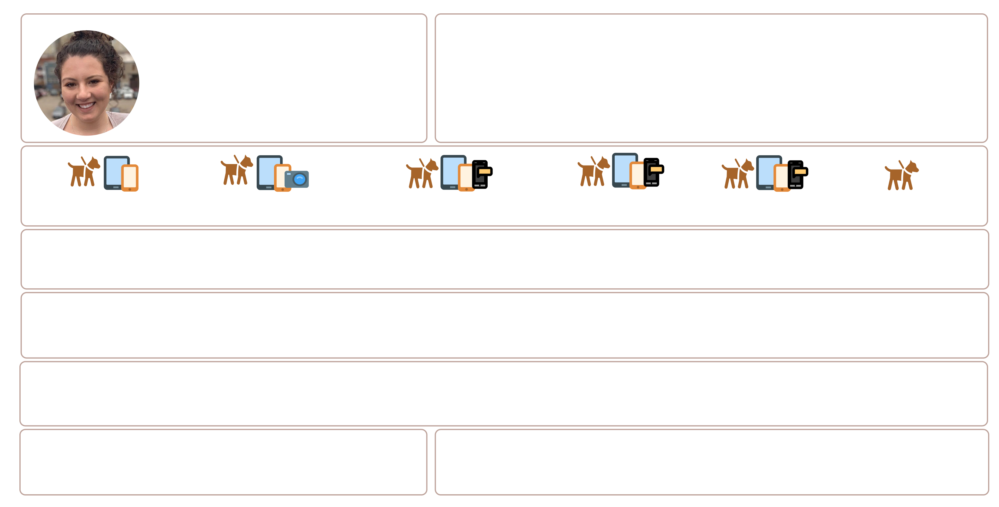
The Screen Flow
-
I continue to draw more ideas by exploring screen by screen on what the look and feel could entail. Below are some exploration ideas before jumping into creating low-fidelity mockups on Sketch. The highlighted sketches are the screens I built upon & from this phase, I decided to move forward and begin constructing my task flow.
The Task Flow
-
The flow I created for Ashley focuses on creating an account and customizing her new dog profile, then matching with nearby dog’s in her area, & finally setting up a structured social interaction that her dog will be very happy about.
-
The hardest part in all this was learning how to tell a story & guide a user through a task flow with only grayscale wireframes. I learned the importance of narrowing the main task flow before translating the design into a digital format. Grayscale wireframes eliminate the extra noise and judgement a particular color can have on the user, & makes it easier to get right to the point. The sketches were then translated into digital wireframes and from there an initial prototype was developed Figma.
Round 1
-
The objective for round 1 of user testing was to get a visual understanding of my user’s interactions and overall feedback of the prototype. My initial plan was to define a single task to test. However, the task : “Match with another dog based on their breed, gender, or sex & schedule a playdate at a pet friendly area to facilitate structured interactions” seemed to be too broad. But would be the most efficient way to phrase the task? I decided to split the main task into (5) co-tasks which all have a particular objective to them. Let’s see how the first 5 testers do.
Round 2
-
The results from Round 2 found that users were still having trouble setting up social interactions. I took this feedback and placed it into the prioritization chart above and started ideating how to mitigate some of the problems that arose.
-
I realized that my original concept for scheduling playdates was too specific and wouldn’t be used by my target audience. I redesigned the concept to be more open ended. Allowing the user to set PlayMarkers, which will notify other dog-owners in the area when they will be going to the park, and allowing them to join if they are free. They do not need to confirm or decline a formal request, they can just show up and have fun!
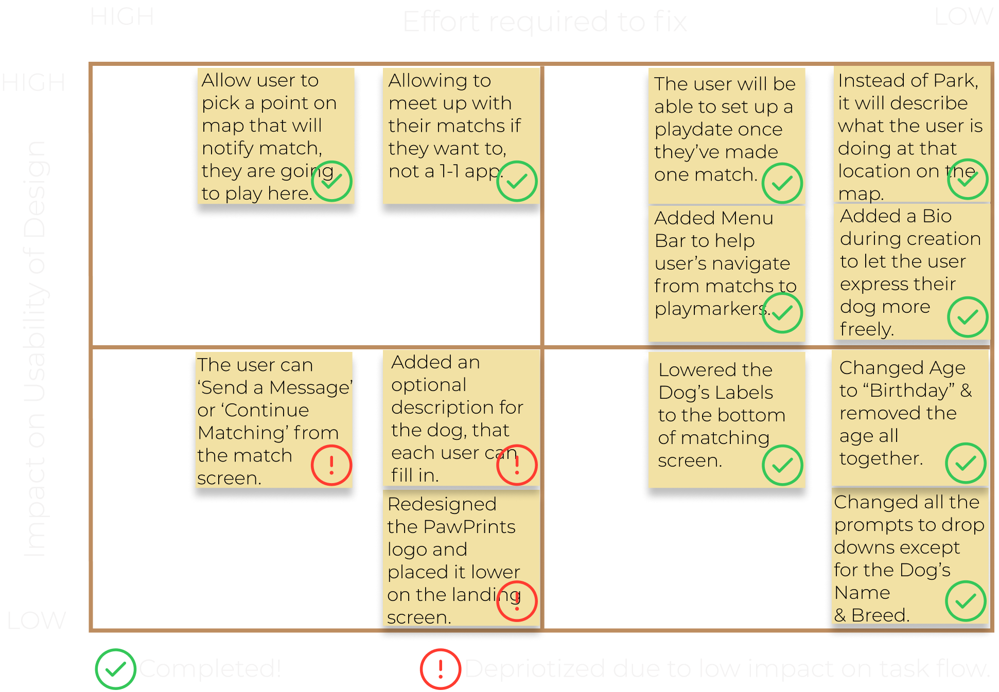
-
I realized that my original concept for scheduling playdates was too specific and wouldn’t be used by my target audience. I redesigned the concept to be more open ended. Allowing the user to set PlayMarkers, which will notify other dog-owners in the area when they will be going to the park, and allowing them to join if they are free. They do not need to confirm or decline a formal request, they can just show up and have fun!
The Design System
The Pawprints Design System was built using Figma and imported into Invision for further prototyping as well as with Figma. I also utilized Webflow to prototype and present my case study for you to read. The PawPrints UI library was composed of many different modules from Google's Material Design icons, as well as iOS cards and templates. In designing a product for mobile, the decision to focus on iOS versus Android was a hard decision. I created a market analysis to make this decision more objective. From this analysis, I had enough confidence to only design for iOS and not Android. [You can view the analysis and full case study here.]
Iconography
I created an extensive UI Library on Figma to make reiterations of my design easier. Google material design icons were used as well as my own designed vectors. Once I designed each of these elements, I then labeled every pixel accordingly to get a better idea of the interface usability. This made the design process a lot easier because I did not have to re-create each element if I changed a color or shadow effect for each element. Below is a brief overview of the main elements used in my final design.
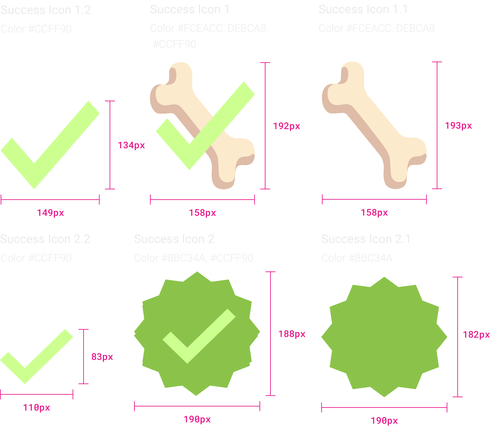
Core Colors
After creating different color concepts that were extracted from my brands identity, I was able to decide on a pallet that best represented my app. From here, I cultivated the brand PawPrints.
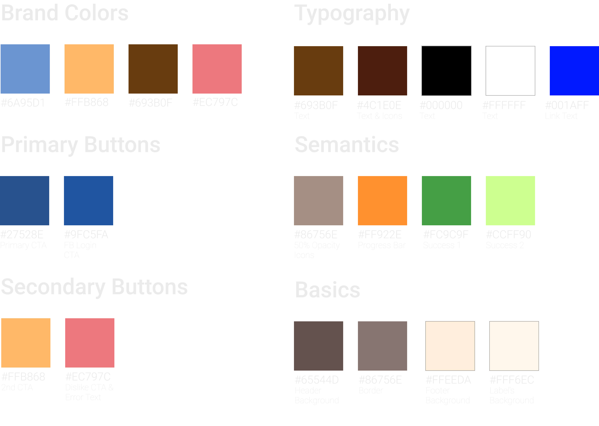
Color Ideation
Below are the different variations of my brands color ideation process. The selected version is highlighted in green below.
Typography
I quickly decided on using a Montserrat typeface at the beginning of my design journey. However, Oswald was used during the lo-fi wireframing and was swapped out with Montserrat due to the wordmark not lining up well with the paw icon. Montserrat has a narrow and minimalist appearance whereas Oswald was more bold. Montserrat with a semi-bold typeface has the same effect that Oswald had but is more universally accepted.
